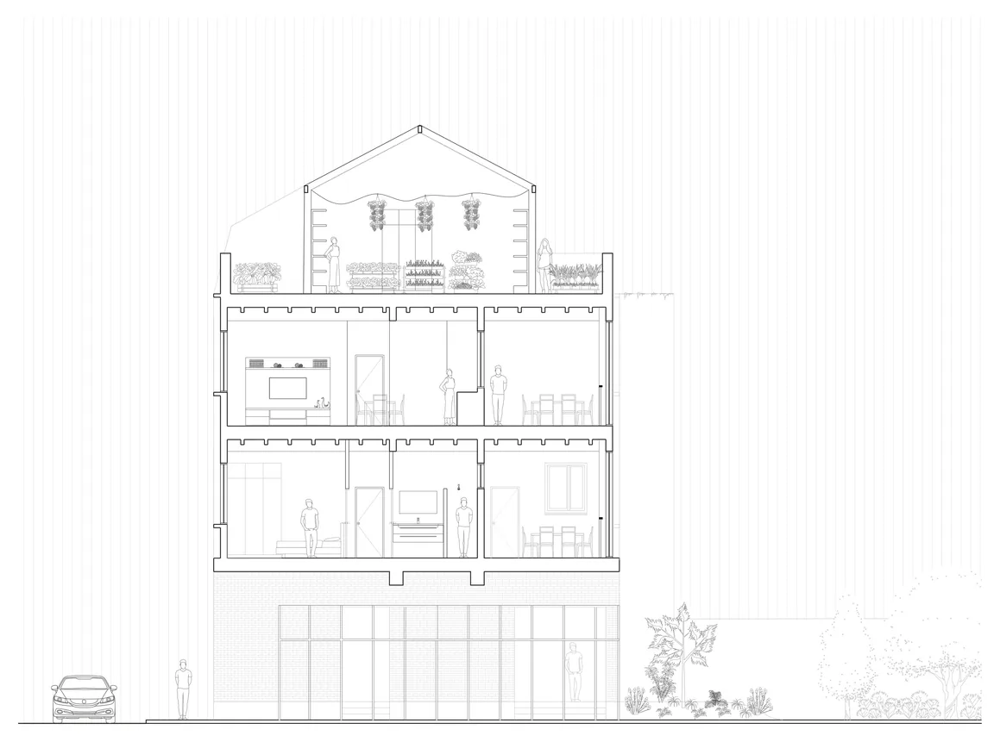
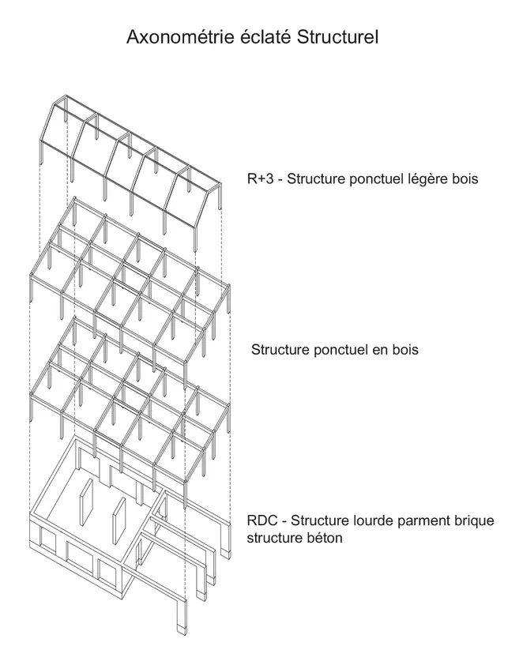
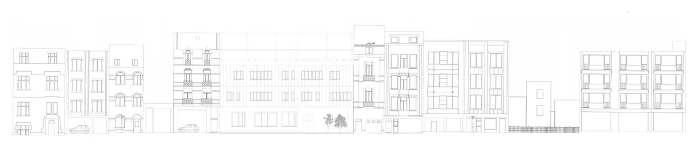
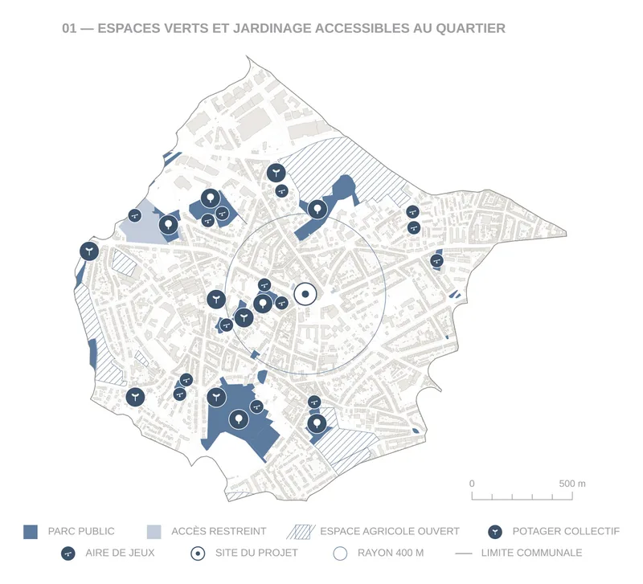
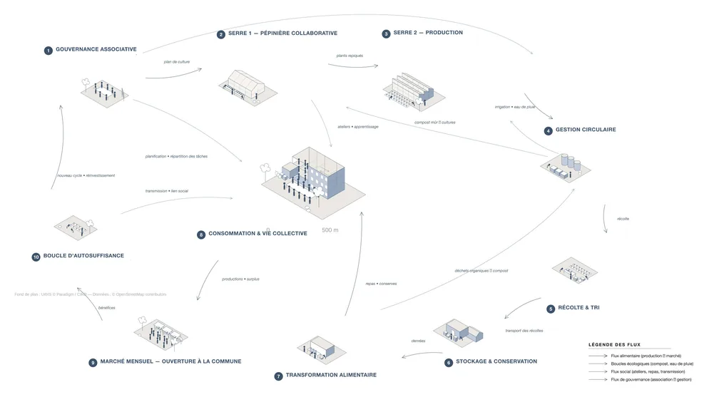
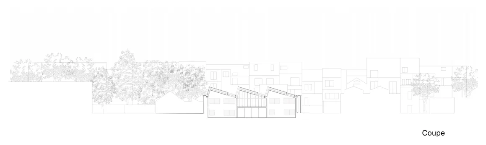

côme le bozec. — portfolio d'architecture
02.1 · habiter, produire, partager — bruxelles · 2025-2026
d'autres projets en préparation


02.1coupe transversale 1:50
bruxelles · 2025-2026 habiter, produire, partager


02.1axonométrie éclatée
bruxelles · 2025-2026 habiter, produire, partager


02.1élévation sur rue
bruxelles · 2025-2026 habiter, produire, partager


02.1carte d'analyse — espaces verts
bruxelles · 2025-2026 habiter, produire, partager


02.1diagramme du cycle
bruxelles · 2025-2026 habiter, produire, partager


02.1coupe urbaine
bruxelles · 2025-2026 habiter, produire, partager
inventaire
01 · territoires & données
- —aucun document publié
02 · habiter & construire
03 · flux & usages
- —aucun document publié
en préparation
- —en préparation
- —en préparation
- —en préparation
- —en préparation
à propos
- formation
- LOCI UCLouvain, Bruxelles — atelier II, 2025-2026
- outils
- rhino 8, grasshopper, qgis, d5 render, indesign